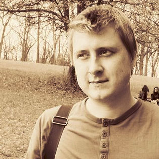

О мероприятии
Настал тот день, когда Донбасс Арена на один день станет местом только для айтишников, разговоров об айти и около айти. 7 сентября 2013г в Донецке пройдет Levi9 Meetup, который соберет IT людей различного уровня, бекграунда, технологий и платформ.
Основная цель встречи – собрать комьюнити программистов, дать возможность всем встретиться, познакомиться, узнать что-то новое для себя и внести свой вклад в социальное развитие айти сообщества Донецка.
В программе митапа будут темы, которые заинтересуют абсолютно всех – от начинающего свой путь в IT студента до опытного архитектора.
И главная цель Levi9 Meetup в том, чтобы после мероприятия вам захотелось чаще встречаться, создавать что-то свое и развивать айти в своем городе.
Для митапа будет выделен отдельный гейт. С центральной аллеи, ведущей к Донбасс Арене, можно будет увидеть указатели к гейту, а для всех, кто будет на автомобиле, указатель к парковке.
- Участие — бесплатно.
- Для тех, кто не сможет видеть и слышать всё оффлайн, будет онлайн трансляция.
Программа
11:30 — 12:00 → Регистрация участников
12:00 — 12:45 → Приветствие от организаторов: Peter Sminia (COO at Levi9, Amsterdam)
12:50 — 13:30 → «Портрет профессионального разработчика»
Николай Алименков
XP Injection
Практикующий Java технический лидер и Scrum Master. Эксперт в разработке на Java, Agile инженерных практиках и управлении проектами. Основатель и тренер тренинг-центра XP Injection. Организатор и идеолог конференций Selenium Camp, JEEConf, XP Days Ukraine и IT Brunch. Основатель действующего «Клуба анонимных разработчиков»
Какой он, современный профессиональный разработчик? Что должен знать и уметь, чтобы не только работать на интересном проекте и получать высокую зарплату сегодня, но и иметь стабильный завтрашний день? Технологии и процессы не стоят на месте, а вместе с ними и требования к разработчикам. Чтобы оставаться «на плаву» надо работать над своими знаниями и навыками. Именно об этом мы и поговорим.
13:35 — 14:25 → Continuous Delivery
Павел Чуняев, Damir Solajic
IT Operations Architect , Levi9
Что такое Continuous Delivery? Почему все говорят об этом концепте и хотят применять в работе? Какие преимущества он дает разработчикам, пользователям и владельцам продукта? В чем отличие от DevOps? Как убедить начальника начать внедрять Continuous Delivery?
14:30 — 15:10 → Voxoz: Zero-Ops Cloud Platform Done Right
Владимир Кириллов
Universal Mind
Молодой инженер в самом расцвете сил. Ко-фаундер Voxoz.
Современные модели разработки ПО далеки от требований платформ, на которых они разворачиваются. Когда вы разворачиваете приложение, написанное на любом языке вы обычно не сразу задумываетесь, что наследуете проблемы всего стека, что используете в своем проекте: операционная система, сетевой стек, менеджер конфигураций, база данных, итд. Мы построили открытую облачную платформу для Erlang, в которой вы полностью управляете всем стеком приложений. В докладе Владимир поделится её секретами.
15:10 — 15:40 → Кофе-брейк
15:40 — 16:20 → Gamification
Дмитрий Малеев
SoftServe
Консультант, лидер Lviv .NET User Group. Спикер на украинских и зарубежных конференциях, получил IT Оскар в номинации «Лучший программист» и просто очень веселый человек.
Геймификация уже давно используется не только в развлекательных сервисах, но и в обучении, и в здравохранении. Что это такое, где и как применить, мобильная геймификация, как начать использовать геймификацию самостоятельно и много примеров её реализации.
16:25 — 17:05 → Куда движется Java

Борис Белецкий
Java Architect, Levi9
Участник зарубежных и украинских конференций, архитектор и разработчик TomTom.
В докладе будет обсуждаться использование алгебраических структур в современных языках программирования и паттернах.
17.10 — 17.50 → Учиться, учиться, учиться! Советы Ильича в трактовании Ивана Васильевича.
Иван Шихат-Саркисов
Skill-School
«Самый главный» в школе мастерства Skill-School, блогер, преподаватель, энтузиаст и инноватор в сфере современного образования.
Жизнь постояное совершенствование, поэтому любая сфера деятельности не может достичь предела. Повышение собственного профессионального уровня актуально для любого человека, который хочет стать "лучше, выше, сильнее...". Когда и как мы можем учиться? Как мотивировать себя к регулярной прокачке skill-ов?